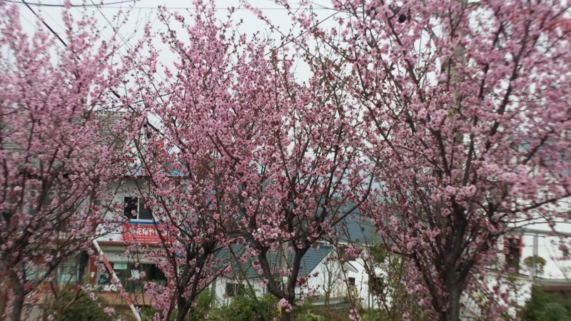
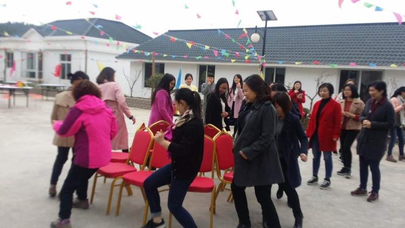
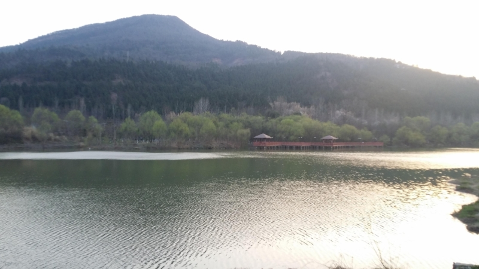

苹 謌风起于青苹之末， 狂来放謌自谴乐。
苹 謌
苹乃草本蕨植物， 十字对生根匍匐。
南边小涧水中藻， 于以菜苹诗经出。
风起青苹于之末， 歌或从言古为謌。
茗香清饮醉欲仙， 狂来放謌自遣乐。
（《诗经》“于以采苹?南涧之滨”；楚国宋玉《风赋》 “夫风生于地,起于青苹之末”;
“薲”是“苹”的本字, 古今字;“苹”今水上浮萍,大者谓之苹,小者曰蓱。)
读名著精言感
细细品读经典言， 情义争悟滋味全。
四大名著久不衰， 人生哲理意蕴涵。
好聚好散难上难， 真情假意人性显。
你争我夺为哪般？ 文化精华世承传。
（2016.03.11 读《道尽人生滋味, 四大名著最动人的 60 句话》)
三八妇女节颂
（一）
阵阵凉风吹阴天， 三八相约玫瑰园。
手持玫瑰游艺展， 拔河跳绳抢凳欢。
和家丽人多异彩， 巾帼骄子花盛开。
（二）
美丽天使水一样， 生命使者吐芬芳。
花儿朵朵漫山野， 谱写人类诗篇章。
（移动“和”家美女们的节日——玫瑰庄园游艺活动之乐）


三月春色
乍暖还寒三月里，
迎春花开香蔓地。
轻风习习拂面清，
水映山色成双影。
（2016.03.03 三月初的春天，珊珊迟来广元。暖冬寒春, 气温频变，忽冷忽热的。迎春花开，春气阳然。白天风和日 丽，微风轻轻吹过脸颊，暖暖的，却又有些凉意，顿觉阵阵 清爽。在依南山傍南河的湿地公园及廊道漫步，尽享生态水 景，闻鸟语花香，吸天然氧吧。恰是踏青游春时喔）

十六登山游
正月十六爬南山，
游走百病体强健。
遥望星空对影看，
十五月亮十六圆。
（2016.02.23 广元湿地公园南山“正月十六游百病”）


情人节快乐
正月倒春寒，
又见雨雪天。
玫瑰花一束，
有情人见欢。
新春万福
春风送暖万物苏，
百鸟齐鸣柳条绿。
羊辞猴来又添岁，
苹謌拜年送祝福。
除 夕
除夕年三十， 一元亦复始。
春气万象新， 爆竹喜庆吉。
家家聚团圆， 福禄多美满。
守岁不眠夜， 叙旧话新年。
情系一线
劳动竞赛第一线，
摆摊设点走集团。
寒风凛冽克艰难，
服务热心受点赞。
同心迎春
冬去春来精神爽，
4 G 宽带能力强。
转型突破齐跟上，
千方百计挣流量。